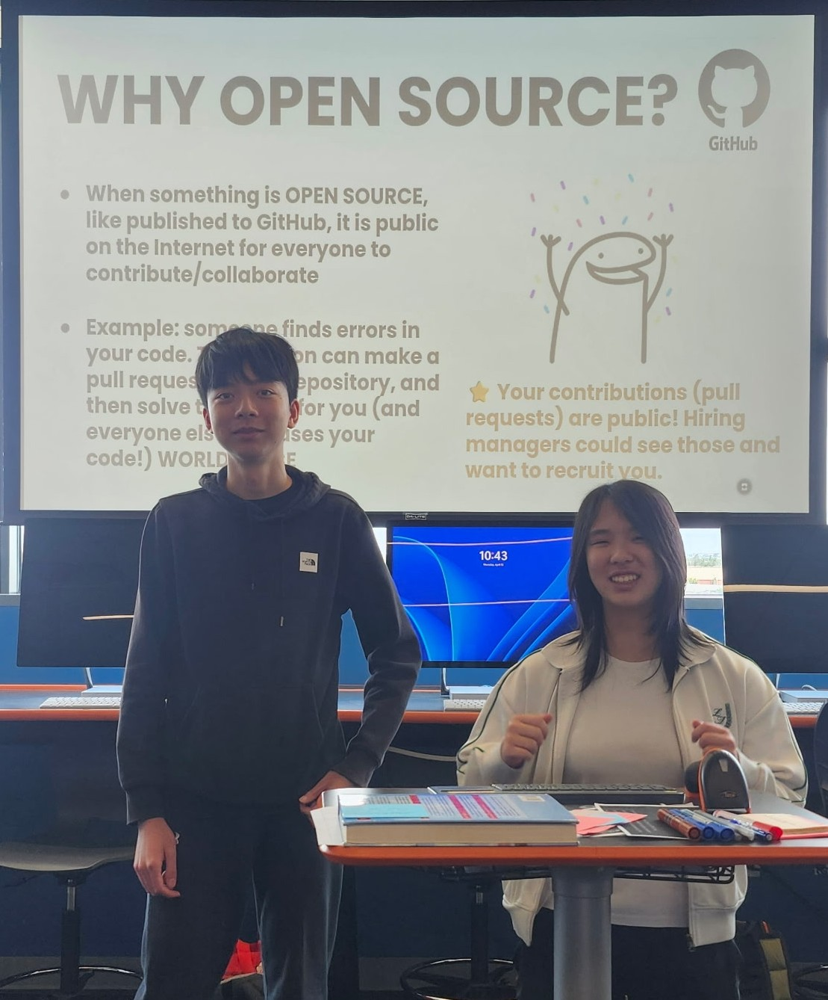

Hey, it's Sarah! I'm an avid computer programmer, engineer, and musician. I'm currently in my senior year of high school and aspire to create greater solutions in the fields I'm passionate about every day. I optimize algorithms for software solutions,, merge my creative intuition to engineer adept solutions, and support my community through my love for music.

As a member of my school club, Eastvale Innovators, I aspire to provide opportunities for STEM students across campus. Through Hack Club, I've taught students how to make portfolio websites, helped them 3D model cookie cutters, and led game jam sessions to help them program online games.
I believe that overreliance on artificial intelligence seriously threatens data privacy, individual autonomy, and mental health. That is exactly why I aspire to educate the population about artificial intelligence.

I've performed in various jazz combos and big-band performances, including my own event supporting the charity Women in Music -- "Blue Fire Chill" -- and raised over $1000 dollars through spreading my love for jazz music.
In my four years of high school, I participated in band every year. In my sophomore year, I was selected for the top band, Jazz I, out of four. The following year, I entered the Wind Ensemble, the top concert band out of four. Through these experiences, I've developed skills of leadership, collaboration, pattern recognition while collaborating in these ensembles.
As part of the ERHS Media Stampede on campus, I manage event logistics for videography, photography, and social media coverage. I film and edit school performances for a showcase of our program legacy: to allow band directors, program veterans, and current students to feel pride in their musicianship.

At the UCSD COSMOS Program, I designed and built a hybrid water and air cooling system addressing the thermal challenges of AI data centers. My solution successfully cooled 50 Watts at a steady-state temperature of 50 degrees Celsius.